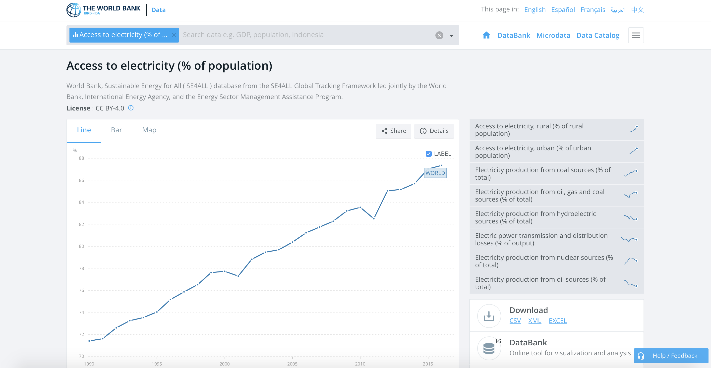

Visualising Electricity Access Over Space and Time ¶
In this post, I'll explore electricity access, i.e. globally what fraction of people have access to electricity. Beyond the goal of finding the electricity access, this post will also serve to illustrate how the
coolness
coefficient of the Python visualisation ecosystem!
I'll be using data from World Bank for electricity access. See the image below for the corresponding page .

Downloading World Bank data ¶
Now, a Python package called
wbdata
provides a fairly easy way to access World Bank data. I'd be using it to get data in Pandas
DataFrame
.
%matplotlib inline
import pandas as pd
import wbdata
import matplotlib.pyplot as plt
import datetime
data_date = (datetime.datetime(1990, 1, 1), datetime.datetime(2016, 1, 1))
df_elec = wbdata.get_data("EG.ELC.ACCS.ZS", pandas=True, data_date=data_date)
df_elec.head()
Downloading Geodata and Reading Using GeoPandas ¶
I'd now be downloading
shapefile
data for different countries. This will help us to spatially plot the data for the different countries.
!wget http://naciscdn.org/naturalearth/10m/cultural/ne_10m_admin_0_countries_lakes.zip
Extracting shapefile ¶
import zipfile
zip_ref = zipfile.ZipFile('ne_10m_admin_0_countries_lakes.zip', 'r')
zip_ref.extractall('.')
zip_ref.close()
import geopandas as gpd
gdf = gpd.read_file('ne_10m_admin_0_countries_lakes.shp')[['ADM0_A3', 'geometry']]
gdf.head()
Visualising electricity access in 2016 ¶
Getting electricity access data for 2016 ¶
df_2016 = df_elec.unstack()[['2016']].dropna()
df_2016.head()
In order to visualise electricity access data over the map, we would have to join the GeoPandas object
gdf
and
df_elec
Joining
gdf
and
df_2016
¶
Now,
gdf
uses
alpha_3
codes for country names like AFG, etc., whereas
df_2016
uses country names. We will thus use
pycountry
package to get code names corresponding to countries in
df_2016
as shown in this
StackOverflow post
.
import pycountry
countries = {}
for country in pycountry.countries:
countries[country.name] = country.alpha_3
codes = [countries.get(country, 'Unknown code') for country in df_2016.index]
df_2016['Code'] = codes
df_2016.head()
Now, we can join the two data sources
merged_df_2016 = gpd.GeoDataFrame(pd.merge(gdf, df_2016, left_on='ADM0_A3', right_on='Code'))
merged_df_2016.head()
Finally plotting! ¶
# Example borrowed from http://ramiro.org/notebook/geopandas-choropleth/
cmap='OrRd'
figsize = (16, 5)
ax = merged_df_2016.plot(column='2016', cmap=cmap, figsize=figsize,legend=True)
title = 'Electricity Access(% of population) in {}'.format('2016')
gdf[~gdf.ADM0_A3.isin(merged_df_2016.ADM0_A3)].plot(ax=ax, color='#fffafa', hatch='///')
ax.set_title(title, fontdict={'fontsize': 15}, loc='left')
ax.set_axis_off()
Creating animation for access across time ¶
!mkdir -p elec_access
def save_png_year(year, path="elec_access"):
df_year = df_elec.unstack()[['{}'.format(year)]].dropna()
codes = [countries.get(country, 'Unknown code') for country in df_year.index]
df_year['Code'] = codes
merged_df_year = gpd.GeoDataFrame(pd.merge(gdf, df_year, left_on='ADM0_A3', right_on='Code'))
figsize = (16, 5)
ax = merged_df_year.plot(column='{}'.format(year), cmap=cmap, figsize=figsize,legend=True,vmin=0.0, vmax=100.0)
title = 'Electricity Access(% of population) in {}'.format(year)
gdf[~gdf.ADM0_A3.isin(merged_df_year.ADM0_A3)].plot(ax=ax, color='#fffafa', hatch='///')
ax.set_title(title, fontdict={'fontsize': 15}, loc='left')
ax.set_axis_off()
plt.savefig('{}/{}.png'.format(path, year), dpi=300)
plt.close()
for year in range(1990, 2017):
save_png_year(year)
# Borrowed from http://www.kevinwampler.com/blog/2016/09/10/creating-animated-gifs-using-python.html
def create_gifv(input_files, output_base_name, fps):
import imageio
output_extensions = ["gif"]
input_filenames = ['elec_access/{}.png'.format(year) for year in range(1990, 2017)]
poster_writer = imageio.get_writer("{}.png".format(output_base_name), mode='i')
video_writers = [
imageio.get_writer("{}.{}".format(output_base_name, ext), mode='I', fps=fps)
for ext in output_extensions]
is_first = True
for filename in input_filenames:
img = imageio.imread(filename)
for writer in video_writers:
writer.append_data(img)
if is_first:
poster_writer.append_data(img)
is_first = False
for writer in video_writers + [poster_writer]:
writer.close()
create_gifv("elec_access/*.png", "electricity_access", 4)

Across Africa and SE Asia, one can clearly see a gradual improvement in access! Hope you had fun reading this post :)